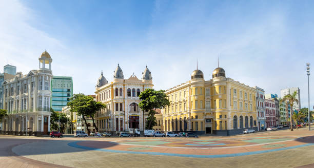

Marco Zero
Venha conhecer Recife Antigo!
O Marco Zero, no Recife Antigo é o lugar de referência onde a cidade nasceu e todas as medidas oficiais de distâncias rodoviárias usam como ponto de partida. Seu nome é, na verdade, Praça Rio Branco e fica ao lado do Porto de Pernambuco.
Pode-se dizer que ele se situa no centro histórico da cidade, que é mais conhecido como Recife Antigo por ser a parte onde se iniciou o povoamento da capital pernambucana.
Texto escrito por Roberta Fonseca, extraído do site Melhores Locais do Recife Antigo